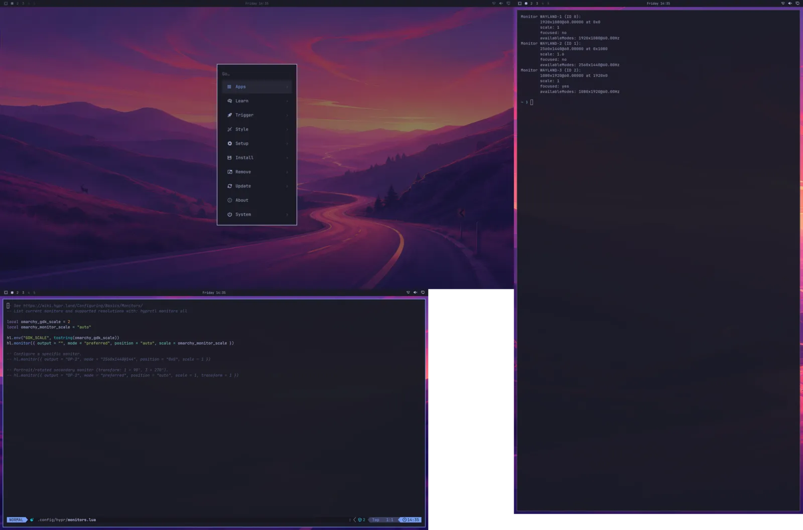

<style>
/* /develop: for people testing apps, and for people changing Hyprland itself. Omarchy plugins and
   themes have their own page, /omarchy. */
.who { font: 500 11.5px/1.4 var(--mono); letter-spacing: .12em; text-transform: uppercase; color: var(--muted); }
.who.f { text-transform: none; letter-spacing: .04em; }
.card.key { --fc: rgb(158 206 106 / .45); }
.card ul { margin: 0; padding-left: 18px; display: grid; gap: 8px; color: var(--ink-2); font-size: 15px; }
.card ul li { min-width: 0; }
.oma-link { margin-top: 28px; display: flex; flex-wrap: wrap; align-items: center; gap: 8px 18px; padding: 16px 20px; max-width: 760px; }
.oma-link b { font: 600 17px/1.3 var(--display); color: var(--ink); }
.oma-link span { color: var(--ink-2); font-size: 15px; flex: 1 1 260px; min-width: 0; }
.oma-link i { font: 500 12px/1 var(--mono); letter-spacing: .1em; text-transform: uppercase; color: var(--sky); font-style: normal; }
/* every desk you don't have: the three-monitor shot beside its commands */
.mons { display: grid; gap: 14px; grid-template-columns: minmax(0, 1fr); }
@media (min-width: 1080px) { .mons { grid-template-columns: minmax(0, 1.2fr) minmax(0, .8fr); align-items: start; } .mons > figure { position: sticky; top: 84px; } }
.mons > * { min-width: 0; }
.mons figure { margin: 0; }
.mons .ways { display: grid; gap: 14px; }
.ws figcaption { font: 400 12px/1.5 var(--mono); color: var(--muted); padding: 10px 14px; border-top: 1px solid var(--line); }
/* checks: a drawing of report.png, each change beside its baseline */
.chk { display: grid; gap: 14px; grid-template-columns: minmax(0, 1fr); }
@media (min-width: 980px) { .chk { grid-template-columns: minmax(0, 1fr) minmax(0, 1.1fr); align-items: start; } }
.chk > * { min-width: 0; }
.rep { display: grid; grid-template-columns: minmax(0, 1fr) minmax(0, 1fr); gap: 12px; padding: 16px; }
.rep figure { margin: 0; display: grid; gap: 8px; min-width: 0; }
.rep figcaption { font: 500 11px/1 var(--mono); letter-spacing: .12em; text-transform: uppercase; color: var(--muted); }
.rep .new figcaption { color: var(--amber); }
.mini { position: relative; aspect-ratio: 4 / 3; border-radius: 9px; border: 1px solid var(--line-2); background: #1a1b26; padding: 12px; display: grid; align-content: start; gap: 8px; overflow: hidden; }
.mini i { display: block; height: 8px; border-radius: 4px; background: var(--s3); }
.mini .btns { position: absolute; right: 12px; bottom: 12px; display: flex; gap: 6px; }
.mini .btns span { font: 500 10px/1 var(--mono); padding: 6px 9px; border-radius: 6px; border: 1px solid var(--line-2); color: var(--ink-2); }
.mini .btns .sv { background: var(--blue); color: #0b0c13; border-color: transparent; }
.new .mini .btns { right: 18px; }
.new .mini .btns .sv { outline: 2px dashed var(--amber); outline-offset: 3px; }
.rep .tagc { grid-column: 1 / -1; font: 400 12px/1.5 var(--mono); color: var(--ink-2); border-top: 1px solid var(--line); padding-top: 10px; }
.rep .tagc b { color: var(--amber); font-weight: 400; }
.hl4 { list-style: none; margin: 18px 0 0; padding: 0; display: grid; gap: 10px; grid-template-columns: minmax(0, 1fr); }
@media (min-width: 760px) { .hl4 { grid-template-columns: repeat(2, minmax(0, 1fr)); } }
.hl4 li { border-radius: 12px; border: 1px solid var(--line); background: var(--s1); padding: 12px 14px; color: var(--ink-2); font-size: 14.5px; min-width: 0; }
.hl4 b { color: var(--ink); font-weight: 600; }
/* tree: tokens, a shot against one line */
.tok { display: grid; grid-template-columns: minmax(0, 1fr) minmax(0, 1fr); gap: 14px; }
.tok .card .in { gap: 6px; }
.tok .n { font: 600 clamp(30px, 3.6vw, 44px)/1 var(--display); color: var(--ink); }
.tok .key .n { color: var(--box); text-shadow: 0 0 24px var(--box-glow); }
.tok p { font-size: 14.5px; }
.line2 { margin-top: 18px; color: var(--ink-2); max-width: 52em; }
</style>
<main class="wrap">
  <section class="page">
    <div class="head">
      <p class="tag">Develop</p>
      <h1>Test your app in a box, <i>and Hyprland itself.</i></h1>
      <p class="lead">For app developers whose agents need to see their work, and for people changing Hyprland or writing
        plugins for it. Omarchy plugins and themes have <a href="omarchy.html">their own page</a>.</p>
    </div>
    <a class="card oma-link" href="omarchy.html"><b>Plugins and themes for Omarchy</b><span>Your bar in a box, your theme
      live, a clean Omarchy for checks, Omarchy's own checkout, the bar widget.</span><i>omabox on Omarchy →</i></a>
  </section>

  <section class="grp" id="monitors">
    <p class="tag">Monitors</p>
    <h2>Every desk <i>you don't have.</i></h2>
    <p class="lead">A box can have as many monitors as a test needs, each with its own size, scale and place, and a bar on
      each: a portrait screen beside an ultrawide, mixed scales, a laptop with a monitor plugged in. Add and unplug them while
      the box runs, and see what your app does.</p>
    <div class="mons">
      <figure class="ws">
        <div class="ws-bar"><span class="dots"><i></i><i></i><i></i></span><span class="t">one box · three monitors</span></div>
        
        <figcaption>1920x1080, a 2560x1440 at scale 1.6 below it and a portrait 1080x1920 beside them. Taken in the box with
          <code>omabox shot</code>.</figcaption>
      </figure>
      <div class="ways">
        <div class="card key"><div class="in"><p class="who">Monitors</p><h3>Any size, scale and place</h3>
          <p>Each monitor goes right of or below the one before, or at the place you give it. <code>remove</code> is an
            unplug: its workspaces move to the others. <code>shot</code> takes the whole layout or one monitor,
            <code>peek --monitor</code> watches one, and clicks and waits work across all of them.</p>
          <pre class="code"><span class="p">$ </span>omabox up --monitor 1080x1920 --monitor 2560x1440,scale=1.6,below
<span class="p">$ </span>omabox monitor add 1366x768
<span class="p">$ </span>omabox monitor remove HEADLESS-3   <span class="o"># an unplug</span>
<span class="p">$ </span>omabox shot --monitor HEADLESS-4</pre></div></div>
        <div class="card"><div class="in"><p class="who">When a monitor drops off</p><h3>Find the crash before your users do</h3>
          <p>A monitor that sleeps, a KVM switch, a dock: <code>output drop</code> takes a screen away and brings it back under
            its own name, and your shell and apps rebuild what they drew there. <code>--cycles</code> repeats it until
            something crashes; it found a real crash in a shell plugin. <code>omabox ls</code> shows a shell that crashed, and
            <code>gdb</code> prints the backtrace of a Hyprland or shell that hung.</p>
          <pre class="code"><span class="p">$ </span>omabox output drop --for 300ms --cycles 20
<span class="p">$ </span>omabox gdb --shell</pre></div></div>
      </div>
    </div>
    <p class="note">A box the agent drives is headless: every monitor at full size. In a box you drive
      (<code>up --interactive</code>), each monitor is a window on your desktop, the whole layout scaled down to fit, so its
      text is small. Your pointer and cursor go from one window to the next with omabox's own build of aquamarine
      (<code>omabox setup --aquamarine</code>).</p>
  </section>

  <section class="grp" id="check">
    <p class="tag">Visual checks</p>
    <h2>Visual checks, <i>without looking at every screen.</i></h2>
    <p class="lead">Write a scenario: a script that drives the box and calls <code>omabox check point ID</code> where a shot
      should match. <code>check run --approve</code> runs it three times in a clean box and keeps what most runs agree on.
      From then on, <code>check run</code> says same or changed for each checkpoint. Each changed region is marked, and for an
      app with an accessibility tree it names the element (<code>moved -6,+0 button "Save"</code>). One report image shows
      every change, the baseline beside the new shot.</p>
    <div class="chk">
      <div class="card"><div class="in">
        <pre class="code"><span class="o"># visual.sh, the scenario</span>
omabox run -d --wait -- ./build/app
omabox check point main
omabox click --window app 640 360
omabox check point settings</pre>
        <pre class="code"><span class="p">$ </span>omabox check run --approve -- ./visual.sh   <span class="o"># the baseline, from three runs</span>
<span class="p">$ </span>omabox check run -- ./visual.sh             <span class="o"># same or changed, each checkpoint</span>
<span class="p">$ </span>omabox check run --json -- ./visual.sh      <span class="o"># for CI</span></pre></div></div>
      <!-- check: COPY wants the real report.png here (the same new media as the home page's checks); this is a drawing until it is shot in a box -->
      <figure class="ws" style="margin:0">
        <div class="ws-bar"><span class="dots"><i></i><i></i><i></i></span><span class="t">report.png, drawn</span></div>
        <div class="rep" aria-hidden="true">
          <figure><figcaption>baseline</figcaption><div class="mini"><i style="width:55%"></i><i style="width:80%"></i><i style="width:40%"></i><div class="btns"><span>Cancel</span><span class="sv">Save</span></div></div></figure>
          <figure class="new"><figcaption>new · changed</figcaption><div class="mini"><i style="width:55%"></i><i style="width:80%"></i><i style="width:40%"></i><div class="btns"><span>Cancel</span><span class="sv">Save</span></div></div></figure>
          <p class="tagc">settings: <b>changed</b>, button "Save" moved 6 px left</p>
        </div>
        <figcaption>A drawing of the report's layout: each change cropped beside its baseline, the region marked.</figcaption>
      </figure>
    </div>
    <ul class="hl4">
      <li><b>Small changes caught.</b> A 2 px spacing change is caught, and so is a colour a few levels off.</li>
      <li><b>Noise left out, and said.</b> What the approve runs disagreed on is left out and said.</li>
      <li><b>Holes fail.</b> The wallpaper showing through a window fails a check.</li>
      <li><b>For CI.</b> <code>--json</code>, and exit 4 when there is no baseline.</li>
    </ul>
  </section>

  <section class="grp" id="tree">
    <p class="tag">Accessibility trees</p>
    <h2>Text <i>instead of a shot.</i></h2>
    <div class="grid2">
      <div class="card key"><div class="in">
        <p><code>omabox tree</code> reads a window's accessibility tree: each control's role, name, text, value and state, with
          bounds a click takes. <code>tree --find 'dark mode'</code> prints the one line that answers the question. For GTK and
          Qt apps, Chromium or Electron with accessibility on, and egui apps on eframe 0.37+. <code>tree --layer</code> reads a
          shell's panel.</p>
        <pre class="code"><span class="p">$ </span>omabox tree --window app
<span class="p">$ </span>omabox tree --window app --find 'dark mode'</pre></div></div>
      <!-- check: ~17 tokens against ~1.5k for a shot is 0.6.0's figure; which toolkits work; egui needs eframe 0.37+ on at-spi2-core 2.61+ (COPY re-check 6) -->
      <div class="tok">
        <div class="card"><div class="in"><span class="who">A shot</span><span class="n">~1.5k</span><p>tokens, to read whether
          dark mode is on</p></div></div>
        <div class="card key"><div class="in"><span class="who f">tree --find</span><span class="n">~17</span><p>tokens, the one
          line that says</p></div></div>
      </div>
    </div>
    <p class="line2"><code>omabox calibrate</code> tells an agent whether its model needs <code>--fit</code> to click right, for
      any model and harness.</p>
  </section>

  <section class="grp" id="record">
    <p class="tag">Video and sound</p>
    <h2>Videos <i>people can follow.</i></h2>
    <div class="grid2">
      <div class="card key"><div class="in">
        <p><code>omabox record</code> films a box, one monitor or all of them at once. <code>--show-input</code> draws in the
          clicks and keys, <code>--captions</code> puts your marks on screen, <code>--cut-idle</code> cuts the still stretches,
          and <code>--glide</code> makes the pointer travel instead of jump. <code>record stop --sheet</code> makes a contact
          sheet, so an agent can check a take without watching it. With <code>up --audio</code>, the sound goes in the video.
          It plays to a speaker nobody hears, never yours.</p></div></div>
      <div class="card"><div class="in">
        <pre class="code"><span class="p">$ </span>omabox up --audio
<span class="p">$ </span>omabox record start -o take.mp4 --monitor all --audio --glide 300ms
<span class="p">$ </span>omabox record mark "Open the settings"
<span class="p">$ </span>omabox record stop --sheet --show-input --captions --cut-idle</pre>
        <p><code>omabox audio 3s</code> says whether the box made a sound in three seconds, when and how loud: a notification
          sound checked without hearing it.</p>
        <pre class="code"><span class="p">$ </span>omabox audio 3s</pre></div></div>
    </div>
  </section>

  <section class="grp" id="apps">
    <p class="tag">Apps</p>
    <h2>Rebuild, restart, <i>look.</i></h2>
    <div class="grid2">
      <div class="card key"><div class="in"><p class="who">Apps</p><h3>A new build in one step</h3>
        <p><code>run -d --replace</code> stops the copy it started before and launches the new build in one step, then waits
          until it has drawn. Its output, Qt warnings and QML errors included, goes to a log.</p>
        <pre class="code"><span class="p">$ </span>omabox run -d --replace --wait -- ./build/app
<span class="p">$ </span>omabox log run</pre></div></div>
      <div class="card"><div class="in"><p class="who">Saves</p><h3>Sign in once, every box starts signed in</h3>
        <p>An app that needs an account, a PIN or a library: set it up in a box once and save its HOME, keyring included. New
          boxes start from the save. Close the app first for a clean save.</p>
        <pre class="code"><span class="p">$ </span>omabox save signed-in
<span class="p">$ </span>omabox up --from signed-in
<span class="p">$ </span>omabox run --from signed-in -- ctest --test-dir build</pre></div></div>
      <div class="card"><div class="in"><p class="who">What you tested</p><h3>The box says what it ran</h3>
        <p><code>omabox ls --json</code> records each box's Omarchy version, its theme, and each mounted plugin's git commit,
          with <code>+dirty</code> when there were uncommitted changes. A screenshot in a pull request can say exactly what it
          shows.</p>
        <pre class="code"><span class="p">$ </span>omabox ls --json</pre></div></div>
      <div class="card"><div class="in"><p class="who">Services and alarms</p><h3>A systemd user manager, if it needs one</h3>
        <p>For apps that manage a service or schedule alarms: <code>--systemd</code> gives the box a real systemd user manager.
          Without it, a box has none.</p>
        <pre class="code"><span class="p">$ </span>omabox up --systemd</pre></div></div>
      <div class="card span2"><div class="in"><p class="who">And</p>
        <ul>
          <li><code>keys down:KEY</code> / <code>up:KEY</code> hold a key across commands, for a bind on release.</li>
          <li><code>omabox log journal</code>: a box has its own journal sockets, so programs that log only there work.</li>
          <li><code>omabox cpu --threads</code>: a Qt Quick app's main thread apart from its render thread.</li>
          <li>Your fonts are in every box, so shots don't fall back silently.</li>
        </ul></div></div>
    </div>
  </section>

  <section class="grp" id="hyprland">
    <p class="tag">Hyprland</p>
    <h2>Hyprland <i>and compositor work.</i></h2>
    <div class="grid2">
      <div class="card key"><div class="in"><p class="who">A Hyprland change</p><h3>Your build, never installed</h3>
        <p>The box runs your Hyprland build instead of the installed one. Start a stock box beside it to compare.
          <code>ls</code> and <code>windows</code> name the build, so a box on it is never taken for a stock one.</p>
        <pre class="code"><span class="p">$ </span>omabox up patched --hyprland ~/code/Hyprland/build/Hyprland
<span class="p">$ </span>omabox up stock</pre></div></div>
      <div class="card"><div class="in"><p class="who">Inside it</p><h3>Lua, events and a backtrace</h3>
        <p><code>lua</code> runs Lua in the box's Hyprland and prints what it returns. <code>events</code> marks a point and
          reads what Hyprland reported after it. <code>gdb</code> prints every thread's backtrace of a Hyprland that hung.</p>
        <pre class="code"><span class="p">$ </span>omabox lua 'hl.get_active_window()'
<span class="p">$ </span>omabox events --mark m1
<span class="p">$ </span>omabox events --since m1 --until 'openwindow>>' --timeout 5s
<span class="p">$ </span>omabox gdb</pre></div></div>
    </div>
    <p class="line2">Plain Hyprland boxes, for Hyprland plugin and compositor developers on any distro, are coming.
      <a class="more" href="next.html">What's coming →</a></p>
  </section>

  <section class="grp" id="limits">
    <p class="tag">Limits</p>
    <h2>What a box <i>can't test.</i></h2>
    <div class="card"><div class="in">
      <p>A box runs the compositor's logic for real: layouts, focus, input routing, the Lua config, IPC and protocols. Test
        these on a real machine:</p>
      <ul>
        <li>Real monitors: their modes, HDR and VRR, a real hotplug. A box's monitors are virtual.</li>
        <li>Several GPUs at once, real input devices, real sound devices, the system bus and suspend.</li>
        <li>The lock screen runs, but takes no real password.</li>
        <li>wgpu apps (eframe's default renderer, iced, Bevy) don't start in a box on NVIDIA: use a GL renderer, or a box on
          the AMD or Intel GPU.</li>
        <li>A box turns PipeWire's realtime module off for its clients.</li>
      </ul></div></div>
    <p class="note">A box is not a security boundary: for code you don't trust, use <a href="compare.html">ai-jail</a>.</p>
  </section>
</main>
